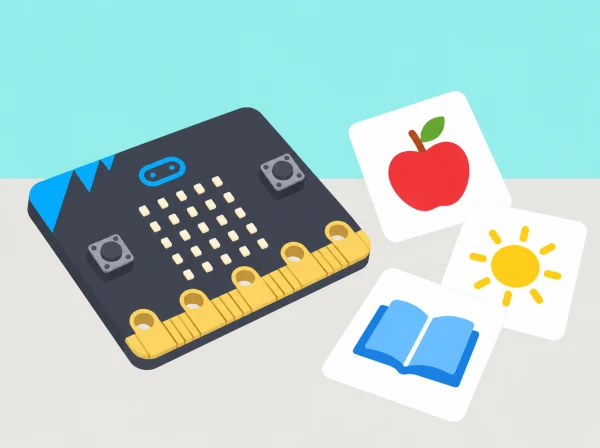

La classe prepara un joc de targetes per repassar vocabulari d’anglés, valencià o una altra llengua que estiguen aprenent. Primer crea algorismes clars perquè una persona presente una pista i l’altra responga; després programa una selecció de paraules com a imatges LED. La matriu 5×5 obliga a abstraure, no a escriure paraules llargues: les targetes físiques conserven l’ortografia, el so i el significat.
BBC micro:bit física o simulador, MakeCode, targetes de vocabulari i fulls 5×5 per esbossar píxels. Seleccioneu paraules que l’alumnat ja haja treballat i acordeu la llengua amb el docent de l’àrea. No cal connexió externa ni cap compte d’usuari.
Recolliu algorisme inicial, vocabulari seleccionat, graella d’icones, prediccions, programa, proves entre parelles i revisió dels criteris. Valoreu si les instruccions s’entenen, si el codi respecta la seqüència i si la representació digital complementa el vocabulari sense substituir-ne la forma escrita o oral.
Sessió 1 — Algorisme de la targeta (45 min): trieu huit paraules d'una unitat que ja s'haja treballat, com ara animals o objectes de classe. En parelles, una persona mostra una pista i l'altra respon; després escriviu què ha de passar des del moment que apareix la icona fins a la resposta. Intercanvieu els rols i proveu les instruccions amb una parella nova. Si «espera un poc» és ambigu, substituïu-ho per una pausa acordada i una indicació clara per continuar. Tanqueu amb una targeta de paper que qualsevol parella puga usar sense ajuda.
Sessió 2 — Abstraure sense perdre el significat (45 min): seleccioneu quatre paraules i dibuixeu per a cadascuna una imatge en una graella de 5×5. Compareu dues versions: quina característica és imprescindible per reconéixer-la? Què s'ha simplificat? Manteniu la paraula completa en la targeta física; la matriu LED és una pista visual, no una representació ortogràfica exhaustiva. Passeu les targetes a un grup que no haja participat en el disseny i demaneu-li que explique què interpreta abans de revelar la resposta.
Sessió 3 — Patrons i pauses (45 min): ordeneu tres flashcards en una seqüència repetida i representeu-la primer amb icones de paper. Afegiu a MakeCode una pausa prou llarga perquè el grup pense abans de respondre. Compareu dues durades i deixeu que l'audiència indique quina facilita el torn. Eviteu pampallugues ràpides: la transició entre targetes pot ser una pausa seguida d'una imatge estable.
Sessió 4 — Predir i experimentar (45 min): abans d'executar el programa, cada equip dibuixa els LED que espera veure i descriu quan apareixerà cada imatge. Proveu l'esbós al simulador o a la placa, una variació cada vegada. Si una icona no apareix com s'esperava, reviseu la graella, l'ordre dels blocs i els esdeveniments d'entrada. Afegiu una targeta numèrica segons la mateixa convenció i comproveu si la seqüència és coherent.
Sessió 5 — Intercanviar, depurar i avaluar (45 min): una altra parella prova el joc sense instruccions orals dels autors. Useu una llista compartida: icona visible, pausa suficient, seqüència correcta, resposta en el moment esperat i opció de passar. Depureu un punt concret i documenteu què ha canviat. Finalment, compareu què ajuda a practicar la micro:bit i què continuen fent millor la conversa, la pronunciació i la targeta impresa.
No avalueu la rapidesa de resposta ni la pronunciació en una llengua que l'alumne està aprenent. Doneu temps de pensar, repetiu la pista quan es demane i accepteu respostes orals, escrites, assenyalades o amb comunicació augmentativa.
Roteu els rols de creador/a de vocabulari, dibuixant de píxels, programador/a i provador/a; amb poques plaques, feu primer la seqüència sencera en paper. Oferiu contrast elevat, imatges estàtiques i targetes impreses amb lletra gran. La persona pot treballar amb el simulador o observar una demostració. No mostreu seqüències intermitents ràpides ni utilitzeu la placa com a únic canal d'informació; les paraules, els sons i les icones en paper continuen disponibles.
Oferiu icones estàtiques, targetes impreses amb lletra gran, lectura en veu alta i temps d’espera configurable. La llum LED no ha de parpellejar ràpid; es pot completar tota la seqüència amb targetes de paper o amb el simulador.
Aquesta situació adapta les cinc lliçons de micro:bit Digital flashcards: algorismes entre parelles, abstracció d’imatges LED, patrons i retards, predicció i experimentació, i depuració/avaluació d’una targeta numèrica. El vocabulari, les icones, els criteris i el format de joc són propis.